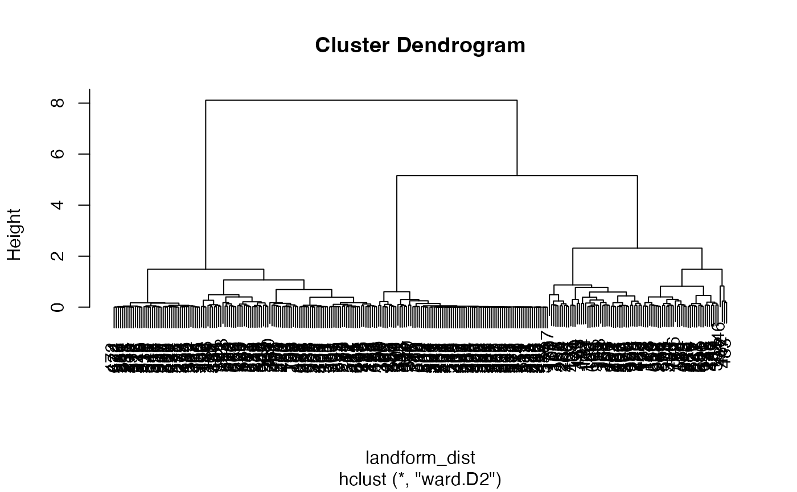

Creates a raster mosaic by rearranging spatial data for example regions. See examples.
lsp_mosaic(x)
Arguments
| x | Usually the output of the |
|---|
Value
A stars object
Examples
# \donttest{ # larger data example library(stars) library(sf) landform = read_stars(system.file("raster/landform.tif", package = "motif")) landform_cove = lsp_signature(landform, type = "cove", window = 200, normalization = "pdf") landform_dist = lsp_to_dist(landform_cove, dist_fun = "jensen-shannon")#>clusters = cutree(landform_hclust, k = 6) landform_grid_sf = lsp_add_clusters(landform_cove, clusters) plot(landform_grid_sf["clust"])landform_grid_sf_sel = landform_grid_sf %>% dplyr::filter(na_prop == 0) %>% dplyr::group_by(clust) %>% dplyr::slice_sample(n = 16, replace = TRUE) landform_grid_sf_sel = lsp_add_examples(x = landform_grid_sf_sel, y = landform) landform_grid_sf_sel#> Simple feature collection with 64 features and 5 fields #> geometry type: POLYGON #> dimension: XY #> bbox: xmin: -851676.1 ymin: -1118556 xmax: 948323.9 ymax: -98556.49 #> projected CRS: unnamed #> # A tibble: 64 x 6 #> # Groups: clust [4] #> id na_prop signature clust geometry region #> * <int> <dbl> <list> <int> <POLYGON [m]> <list> #> 1 160 0 <dbl[,225] … 1 ((-431676.1 -278556.5, -371676.1 -27… <star… #> 2 165 0 <dbl[,225] … 1 ((-131676.1 -278556.5, -71676.1 -278… <star… #> 3 204 0 <dbl[,225] … 1 ((-11676.1 -338556.5, 48323.9 -33855… <star… #> 4 165 0 <dbl[,225] … 1 ((-131676.1 -278556.5, -71676.1 -278… <star… #> 5 160 0 <dbl[,225] … 1 ((-431676.1 -278556.5, -371676.1 -27… <star… #> 6 164 0 <dbl[,225] … 1 ((-191676.1 -278556.5, -131676.1 -27… <star… #> 7 165 0 <dbl[,225] … 1 ((-131676.1 -278556.5, -71676.1 -278… <star… #> 8 165 0 <dbl[,225] … 1 ((-131676.1 -278556.5, -71676.1 -278… <star… #> 9 165 0 <dbl[,225] … 1 ((-131676.1 -278556.5, -71676.1 -278… <star… #> 10 204 0 <dbl[,225] … 1 ((-11676.1 -338556.5, 48323.9 -33855… <star… #> # … with 54 more rows# }